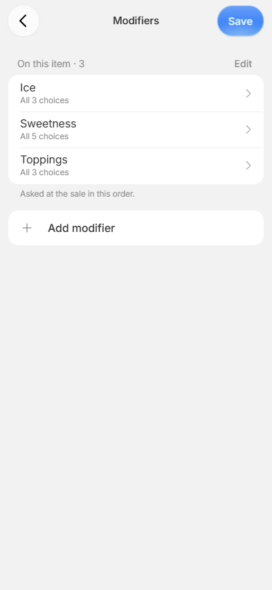
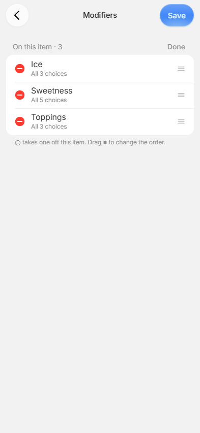
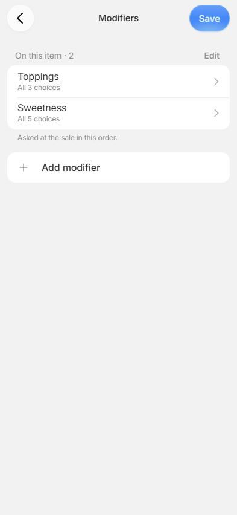
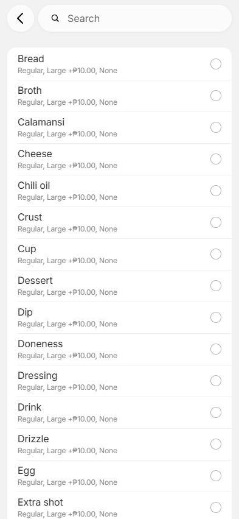
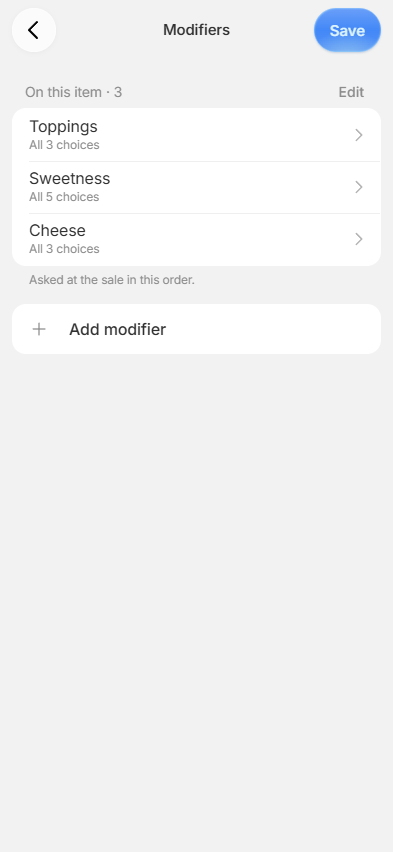

Each tap does one job. A row only opens. Edit shows ⊖ (take it off this item) and ≡ (drag to reorder), and Done goes back. Adding is a page of ticks of its own.
1 · OpenRows show › only

2 · Tap IceIts choices; Remove at the bottom3 · Edit⊖ left, ≡ right, rows don't open

4 · Drag Toppings up5 · Let go6 · ⊖ on IceGone; it's back in Add7 · Done

8 · Add modifierSearch + ticks

9 · Tick Cheese10 · BackCheese joins the end

11 · Nothing askedNo jump; Add + a note12 · Store has none